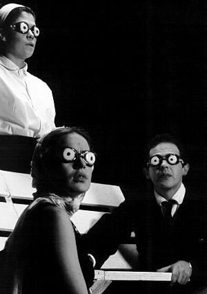

Información: (+57) 350 215 11 00 (WhatsApp)
- Festival Internacional de Manizales, Colombia, 1993
- Festival Iberoamericano de Teatro de Cadiz, España, 1993
- Festival Latino, Bélgica, 1993
- Festival Latino, Nantes, Francia, 1993
- Temporada Teatral, Red Latinoamericana de teatro, Guatemala, 1994
- XIX Festival de Teatro - El Gesto Noble. 2014
Diez pesquisas en cincuenta y cuatro metros cuadrados por: Cristóbal Peláez
JUEGOS NOCTURNOS I
de Jean Tardieu?
 |
|
Sólo para nictálopes...
"La esencia de todo arte es la poesía"
La historia de los "Collages" en el teatro suele ser al mismo tiempo la historia de sus fracasos. No importa que al género de piezas breves estén unidos nombres de tanto alcance como los de Beckett o Jean Tardieu.
¿Qué cuento es vuestro cuento? fue la primera puesta en escena del Teatro Matacandelas que proponía una mixtura abigarrada de temas breves respaldada por el brillo de Shakespeare, García Márquez, León de Greiff, así como varios autores locales desconocidos por la gran mayoría.
La intención en aquellos primeros años era ofrecernos a nosotros mismos, a nuestra experiencia, un panorama abierto de temas y dramaturgias, y de paso instaurar una presencia en el ambiente teatral. Fue así como se lograron, con gran aceptación, 200 representaciones en distintos puntos del país, llegando a veces a los sitios menos convencionales, en las más anecdóticas condiciones.
Para el año 1987 el grupo, como resultado de talleres y experimentos en torno a fragmentos, atmósferas, personajes, lenguajes, concibe realizar un nuevo divertimento con el título de JUEGOS NOCTURNOS I. El proceso entrevió dimensiones más amplias -tiempo, experiencia, economía, técnica- a aquellos que podía ofrecer el equipo.
Configurado por fin a principios de 1992, JUEGOS NOCTURNOS I adquiere su guión definitivo con piezas breves de Jean Tardieu, Georges Neveux, Samuel Beckett, Eugene Ionesco y Felisberto Hernández, autores invisibles en nuestro paisaje teatral. Nueve piezas independientes entre sí, que aparecen unidas por la magia del ritmo y la atmósfera escénica del Matacandelas, tratando de dar un breve vistazo a diferentes técnicas y formas teatrales.
Estos, nuestros JUEGOS NOCTURNOS I revelan sobre todo, a esta altura del trayecto de MATACANDELAS, un ajuste de cuentas con nuestras más caras obsesiones, un inventario infernal, un prontuario especulativo de estilos y lenguajes.
El espectador podrá advertir allí huellas evidentes, citas visuales y sonoras, climas ya avisorados en otras oscuridades, un tumulto de traiciones: Shakespeare, Beckett, el cine de Alfred Hitchcock, el prolongamiento rítmico de Sergio Leone, la radio -en la época en que nos ponía a imaginar rostros y situaciones-, el recuerdo de Sánchis Sinisterra -su utilidad, su trampería escénica-; y ahí también Maeterlinck y Pessoa, autores con los que es posible -con toda razón- se nos reproche la incidencia estática, y otro más: Ives Montand. Algunas voces secretas que ensartan, interrumpen o disminuyen la acción, tienen propietarios reconocibles: Balzac, Nietzsche, Chejov, Gómez de la Serna.
PROGRAMA
¿QUIÉN ESTÁ AHÍ? Jean Tardieu.
LA INÚTIL CORTESÍA. Jean Tardieu.
DRAMA O COMEDIA. Felisberto Hernández.
OSWALDO Y ZENAIDA (O LOS APARTES). Jean Tardieu.
ESCENA PARA CUATRO PERSONAJES. Eugene Ionesco.
INTERMEDIO
LA CONSAGRACIÓN DE LA NOCHE. Jean Tardieu.
INTERREGNO. Samuel Beckett.
EL CANARIO. Georges Neveaux.
CONVERSACIÓN SINFONIETA. Jean Tardieu.